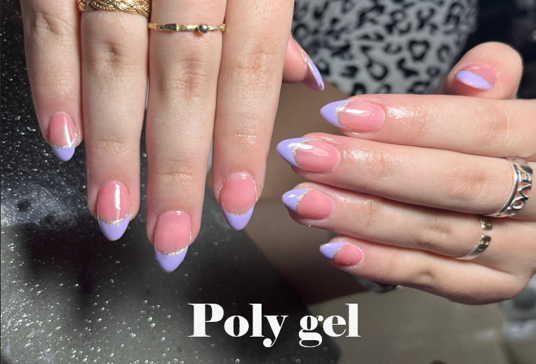
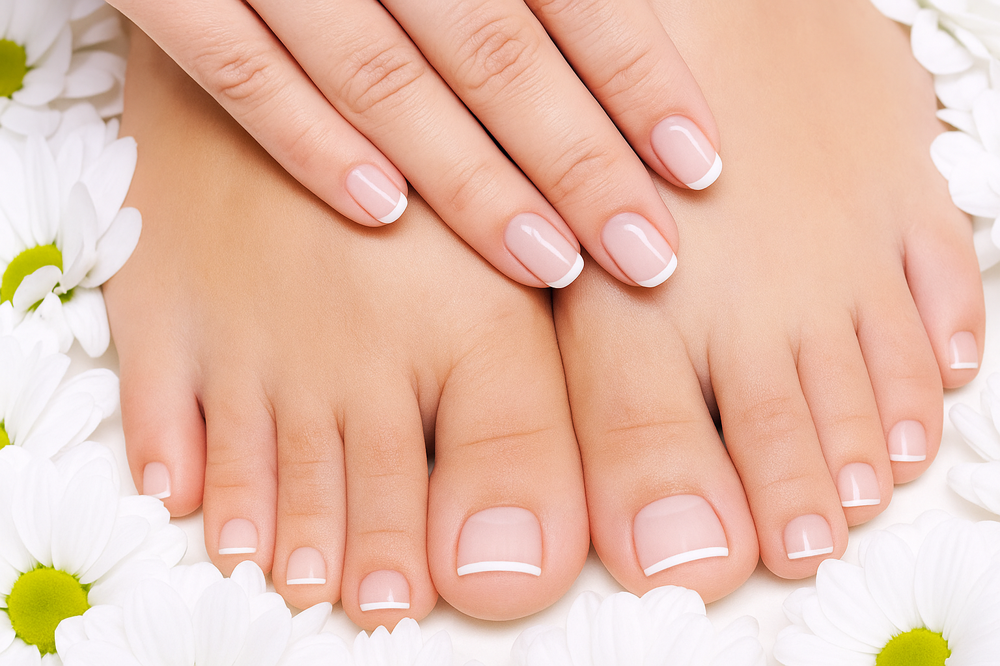

El arte detrás de cada técnica

Soft gel
- Preparar la uña natural: empujar cutícula, limar, quitar brillo, limpiar y aplicar primer.
- Elegir el tip adecuado: que cubra bien la uña sin tocar piel.
- Poner base gel y curar.
- Aplicar gel en el tip, colocarlo en la uña y curar bajo lámpara
- Limar, dar forma y esmaltar con color y top coat.
- Curar nuevamente y aplicar aceite de cutícula.

Semis
- Preparar la uña: empujar cutícula, limar, quitar brillo y limpiar.
- Aplicar primer o deshidratador.
- Base coat: capa fina y curar en lámpara (30 a 60 seg).
- Esmalte en gel: 2 capas finas, curando entre cada una.
- Top coat: sellar y curar.
- Limpiar si hay capa pegajosa (si el top no es sin wipe).
- Aceite de cutícula para hidratar.

Capping
- Preparar la uña: empujar cutícula, limar, quitar brillo y limpiar.
- Aplicar primer o deshidratador.
- Base coat: capa fina y curar en lámpara.
- Aplicar capa de gel constructor o rubber base (para dar grosor y protección).
- Nivelar y curar en lámpara (60 seg aprox).
- Limar si hace falta para emparejar.
- Top coat y curar.
- Aceite de cutícula para finalizar.

Cat eye
- Preparar la uña: limpiar, limar, quitar brillo y aplicar primer.
- Base coat: capa fina y curar en lámpara.
- Aplicar una capa de color base (negro o similar) y curar.
- Aplicar esmalte Cat Eye (no cures todavía).
- Acercar el imán a la uña durante unos segundos para formar el efecto.
- Curar en lámpara.
- Top coat y curar.
- Aceite de cutícula para finalizar.

Poly gel
- Preparar la uña: empujar cutícula, limar, quitar brillo y limpiar.
- Aplicar primer o deshidratador.
- Base coat: capa fina y curar en lámpara.
- Aplicar el Poly Gel con espátula sobre la uña o tip dual.
- Moldear con pincel y líquido slip solution.
- Curar en lámpara (60 a 90 seg).
- Limar y dar forma.
- Top coat y curar.
- Aceite de cutícula para finalizar.

Exfoliación e Hidratación de manos y pies
- Limpieza inicial: lavar y desinfectar manos o pies.
- Exfoliación: aplicar exfoliante con masajes suaves circulares para eliminar células muertas.
- Enjuagar y secar.
- Mascarilla o crema nutritiva: aplicar y dejar actuar unos minutos.
- Masaje relajante: distribuir el producto con movimientos suaves.
- Retirar exceso (si es necesario) y dejar la piel suave e hidratada.